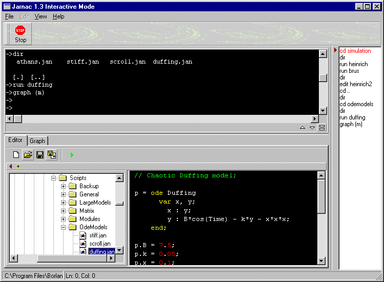
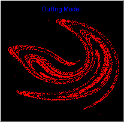

Jarnac: Systems Biology Software
| Jarnac 2.0 Production Version #4 Install for Windows |
Jarnac is only recommended for very
experienced
users. If you want a nice easy tool to do
simulations etc, then use JDesigner
Source Code for Jarnac version 2.0 Build #16 (~10MB)
Jarnac: An Interactive Metabolic Systems Language
What is Jarnac ?
Jarnac is a language for describing and manipulating cellular system models and can be used to describe metabolic, signal transduction and gene networks, or in fact any physical system which can be described in terms of a network and associated flows. Jarnac is basically version 2 of SCAMP.
Jarnac is a project I've been toying with for some
years now and I finally took the plunge to write it after a stimulating trip to
a recent NATO conference in April 1999. The current version is still being
enhanced, this version and all future versions are being released into the
public domain free of charge. However, the author still retains copyright and no
commercial exploitation may be permitted without
acknowledging the author.
I wrote Jarnac
with a specific application in mind and this is still the main focus for
continuing its development. I do not wish to suggest that Jarnac is in any way a
formal standard for specifying metabolic systems or might even be useful to any
other person other than myself, however if others do find it useful then all the
better. Jarnac is a Windows based program that can run under 95/98, NT and 2000.
Documentation is still being written but the latest release has more
documentation and more examples that the previous release. There are over 100
working example Jarnac programs, (including a 15 reaction model of glycolysis, a
model of the calvin cycle and a structural model of The core pathways of Tryps brucei),
a 49 page summary (in LaTeX and PDF) and a QuickStart document is supplied with
the distribution.
Other points of interest:
Jarnac 2.0 also has an SBW interface (System Biology Workbench), this means Jarnac can be used as a server to provide simulation capabilities for alternative clients, such as Java based GUIs, pathway databases which require simulation capability, Web pages etc. In server mode Jarnac can be run invisibly in the background. The latest version of JDesigner has simulation capabilities which are provided by Jarnac via SBW.
What is Jarnac written in?
For such a large project, a variety of languages are employed. These include Fortran and C/C++ for the numerical analysis and some core functionality, and Delphi 6 (Borland) for the main interface (GUI) elements. In this way we maximize each languages' strengths within the overall project. In terms of code size Jarnac comprises of 214,036 lines of compiled source code. This does not include the support DLLs, third-party GUI elements or commenting within the code itself.
Could Jarnac be compiled to run under Linux?
In principal yes, all the languages used to compile Jarnac are available on the Linux platform, including GUI support.
Is the source code available and what license is it distributed under?
Yes, just email me a request and I'll send you all the code. Jarnac is distributed under the LGPL license to allow greater flexibility.
Can Jarnac be used in a commercial setting?
Yes, there are no restrictions except an acknowledgement that you are using code written by Herbert M Sauro
History of Version 2.0 Beta Builds:
Build #6 Gillespie failed to reinitialise correctly when used a second time on the same model
1. Complex data type added. Jarnac now
fully supports complex
data, including complex scalar, vectors and
matrices.
2. imag and real functions added to extract parts of a
complex number
3. Syntax high-lighter in the editor panels redone, a
number of annoying bugs eliminated.
4. Console window rewritten, now
allows cut, copy and paste of text fragments
5. Industrial strength
numerical routines employed to carry out svd,
eigenvalues,
eigenvectors, inverse, determinant and LU decomposition,
routines provided
by IMSL. Additional function eigenvectors
added.
6. mod arithmetic function added
7. New function float,
converts integer value to a float
8. Stochastic simulation facility added
via new function, gillespie()
9. Added five-point evaluation of control
coefficients
8. Interface to SBW redesigned for greater flexibility -
still in progress
9. Exit via close button or exit menu added
10. New and more extensive test suite included
11. Exit via close button or exit menu
added
12. Added augr() function which augments two matrices by
row
Beta #7
13. Jacobian is now labeled with species
names
14. Graph title was sometimes disappearing, now it
doesn't
15. Basic 3d Surface plotting available with command graphsurface
(m)
16. More extensive SBW interface available (Use SBW Inspector to obtain interface documentation)
Beta #8
17 Jacobian labeling for models with conserved cycles was wrong, now fixed.
Beta #9 - required to fix problem with
SBML
17. Fixed a problem with the console history buffer which has been
annoying
me for months
18. Bug crept in from last build with respect
to SBML generation, it was
generating parameter tags for every parameter in
each reaction.
19. A minor bug with saving 'new' files from the editor
was fixed
Beta #10
20. Small typo bug in
SBML output, prevented correct parsing of SBML
21. New function
CopyToSBW, copies a SBML string to the Systems Biology Workbench
Beta
#11
22. Added PasteFromSBW() function, returns SBML currently held in SBW
clipboard.
See change 21 above
23. Fixed some issues with rules and
SBML
Beta #12
24. Added a few
more methods to the SBW interface (use SBW Inspector for details)
25. One
issue with SBML generation when rules were employed was fixed
No Beta #13
Beta
#14
26. Fixed error handling in new IMSL library interface
Beta #15
27. Error crept into Rules and XML
generation
2.0 Final January 2003
======================
1. The SBW API interface has been augmented with an additional
simulation service to permit multiple model simulation.
2. The stoichiometry matrix method, .sm was slow and with the introduction
of complex types, used too much memory. It has now been greatly speeded up
and is much more efficient with memory allocation. This was only
a problem with very large models.
3. Documentation has been updated.
Jarnac was demonstrated at the latest version at the
BTK2000 meeting to be held in S. Africa in April 2000. See http://www.sun.ac.za/biochem/btk for
details.
Jarnac was demonstrated at the Computation in Cells workshop at
the University of Hertfordshire. This is a EPSRC
Emergent Computing Workshop.
See http://www.epsrc.ac.uk/documents/announcements/ecomp_nw0.htm
for details
2.0 Final January 2003 #1
======================
Added more methods to the SBW interface, in particular metabolic control analysis method calls.
2.0 Final #2 February 2003 #2
==========================
Someone spotted some bugs that got introduced into the ode object solver
(doesn't affect the usual reaction modeling).
2.0 Final #3 March 2003
==========================
Fixed a problem with the 3D plotter and fixed a compartment issue introduced
in Final #2
2.0 Final #4 March 2003
==========================
My mistake!
VERSION ONE
Source Code to Jarnac is Available for download
Jarnac Source Code (7 MB) (1.18b)
Update to version 1.2 is available
Download Latest Version (1.2)
If you wish to be put on a mailing list and be informed about the latest updates, send an email to hsauro@cds.caltech.edu giving your email address and in the subject heading enter 'Join'.
Latest Changes - version 1.2
1. Added simple project support
2. Upon exit,
Jarnac will ask if you want changed files saved or not
3. Email and/or zip
models and/or projects
4. Requires ZipDll and UnzDll for zip functionality
(supplied with the distribution)
5. Updated charting tool
Latest
Changes. version 1.19
1. The network matrix property 'L' has been
changed to 'LM'. 'L' is frequently used
to mean Ligand in biochemistry. This
change was made to restore the symbol 'L' to
its more traditional role. To
obtain the Reder L matrix for a network use p.LM instead
of the usual
p.L
2. The socket interface which
allowed Jarnac to act as a server was broken,
this crept in during the last
release when the socket management code
was changed.
3. New shell
command, 'pwd', returns the current directory
4. Better printing
facilities from the editor
5. SBW implementation in beta release with
this version.
6. Launching of JDesigner from the tool bar is now achieved
via SBW. If you
wish to enable this feature then you must download the SBW
distribution from
www.cds.caltech.edu/erato. In addition you must register
JDesigner with the
SBW broker, you can do this by running JDesigner and from
the options
menu select register with SBW menu item.
Latest Changes. version 1.18b
1. Changes to a previous version of the scanner
caused End line character
to be miss-interpreted when the last item in
an input line was a string.
This meant that two return keys were required to
cause Jarnac to
compute the command line.
2. Added Print button to
script editor to allow printing directly from the editor
3. Conflict
between hardcopy print and console print keywords (oops). Therefore
the
hardcopy print shell command has been changed to 'HardCopy filename'
4.
solve() function was passing the wrong number of arguments to the solver
(bug
introduced during a recent change to the calling mechanism)
5.
Added a splash screen with status info
6. New Keypressed
function
7. Complete rewrite of interface between Visual Designer and
Jarnac. Visual designer
is now a stand-alone application, communication to
designer is via a socket interface.
8. Introduced new visual designer
object to allow programmic control of JDesigner
9. Fixed a very annoying
problem with comments interfering with model declarations
Latest Changes, 1.18a
1. Problems when using edit command to load a new
.jan file. After closing Jarnac, reopening Jarnac
caused a list index out of
bounds because the file name was saved under a slightly altered name.
2.
Added new function tau(x) which evaluates: 1/x * ln (1/rnd). Useful for
implementing
Gillespie's stochastic simulation algorithm. See stats.jan for
details
3. Added new property 'AsMolecules' to network object type. Enables
easy conversion of amounts
in moles to number of molecules and visa versa. eg
p.AsMolecules ("S1") = 10e12;
4. Added a few useful constants to the math.jan
startup file
5. Built-in editor has Drag & Drop enabled, thus one can
drag files from, say explorer
and drop the file on to the editor panel.
6.
Associating jan files with Jarnac now works correctly, double click on a jan
file
(once you've associated jan files with Jarnac) and Jarnac will start and
load the
selected file into the built-in editor.
7. Other internal
changes, for example, Visual designer has been made more independent.
8. The
socket access to the Jarnac server has been changed so that an external
client
much first 'login' to the server - this is simply a security measure,
see docs for details.
Latest Changes. version 1.18
1. Enhancements to the editor: Multiple file editing,
better search facilities
2. Implementation of CVODE integrator (supplied as a
DLL)
3. XML import/export has been updated to conform to the the latest ERATO
release documents on SBML standard model exchange format.
4. Jarnac can now
act as a server for remote requests, this is achieved by implementing a server
socket. Any legal Jarnac script can
be sent to a remote machine where Jarnac
is running. In tests, we have successfully run a simulations from a Linux
desktop machine using
Python as the socket client. Python sample code is
supplied in the documentation. Any machine or OS that supports standard BSD
sockets may run Jarnac remotely. This change is part of a broader objective to
open up Jarnac for remote and programatic access.
5. Introduction of a new
data type, 'code type'. The syntax for the sim.eval(), cc() and ee() methods
have changed to accommodate code types.
6. Documentation
updated
Latest Changes. version 1.17b
Bug fix release
1. Xml files were not being
found in some situations
2. GenScript was not taking into account the
reversibility flag when generating -> or =>
Latest Changes. version 1.17a
1. Network clone method was broken when dealing with
multi-reactant systems
2. Forcing functions functionality has been completely
changed - see docs for details
3. Minor update to the help file, fixed broken
links
4. Three new generic methods for objects, methods, functions and
properties, each
of these return a list of names of the respective types.
Useful if you're not
sure what methods are available for a particular object.
Once you have the name you
can use the quick help to get more details on the
item.
5. Small additions to the network syntax to make it easier to port
other formats.
Latest Changes. version 1.17
Significant changes:
1. Added Solve function for solving sets of
non-linear equations
2. New keywords in network declarations to include
compartments (vol, in)
3. Added AsMoles and AsMolarity properties to network
object
4. New style installer
5. Metatool support failed in certain cases
in version 1.16. Many thanks to
Frank Bruggeman for spotting this
problem.
6. Compartmentation
7. XML Import/export - prototype, see
http://www.cds.caltech.edu/~hsauro for more details
Latest Changes. version 1.16
Significant changes:
1. Minor bug fix to user
function calling (see history for details)
2. Exception handling
implemented
3. Added SizeOf (x), get number of bytes occupied by x
4.
Added Dim (v|m), get dimension of matrix/vector as a list
5. Added Mark
method to graph object
6. File History added to editor
7. New methods for
graph object, 'hide' and 'show'
8. New constructors added to graph
object
9. New method, 'join' added to graph object
10. New property,
'axes', to set all axes limits in one call, cf. xmax, xmin etc
11. New
keyword, extern added to language to allow access to external
variables in
user functions
12. New key word, break added to allow control to exit from
while/repeat/for loops
13. More examples
14. Updated Metatool setup plus a
bug fix
15. Updated documentation
Latest Changes. version 1.15
Significant changes:
1. Bug fixes as reported
by Frank Bruggman and Marcel Hoefnagel (see history)
2. Computation of
elementary modes using MetaTool (Thanks the Stefan Schuster)
3. New steady
state solver
4. User Functions prompted to Jarnac object types
5.
Experimental runtime network manipulation implemented
6. See history file for
details of other changes
Latest Changes. version 1.13
1. Default properties used as matrix/vector indices
not correctly handled.
2. Range checking failed during assignment of vectors
to matrix rows
3. Models containing conserved cycles which resulted in the
reordering of
the stoichiometry matrix failed to reorder the metabolite
vector with resulting
errors in the numerical solution.
4. New
functions, GetRowName and GetColumnName. eg GetRowName (m, 2) retrieves
the
row label at the second row in matrix m.
5. Changed method by which
conserve function computes the conservation matrix,
computation is now
carried out in the same way as internal numerical method.
6. New function
'aug' (augment) used to augment one matrix with either another
matrix or a
vector, eg q = aug ({{1,2},{3,4}}, m)
7. Better error reporting from the
Lsoda integrator
8. Sample scripts tidied up
9. New 'real' models, Calvin
cycle model and the Tryps brucei model (structural model only)
10. New
functions comb and perm (combinations and permutations), new
function
fact(orial) and GammaLn. Required for certain network
computations.
11. New builtin variables MatMaxWidth and MatDecPlaces for
controlling matrix display
format. Useful for displaying nice looking
stoichiometry matrices (see tryp.jan for
example - this example also uses a
new file object for printing out results, not
yet fully implemented yet, thus
not documented officially here).
12. Internal memory management
changes.
13. New Tolerance properties (rtol, atol) exposed in the simulation
object.
Latest Changes. version 1.12
1. Some syntactical constructs did not generate
correct code, eg m[1, v[1]] = 99;
m[1, mod.v[2]] = 88,
some tweaking to the parser.
2. urndv (x) caused access violations
3.
Include Addhelp function for Modules
4. Docs updated.
5. New functions,
vector(n), readkey, readstring, hist, pause, sdf
6. Further
enhancement to graphing including new 3D graphing
object
7. More samples scripts.
8. New properties for the network
object.
9. See History.txt file for further details.
Latest Changes. version 1.11
1. Rewritten front-end parser to remove some annoying
inconsistencies
2. IMPORTANT: Equality symbol is now '==' rather than
'=', '=' used in assignments
3. Further improvements to graphing, eg multiple
graphing panes
4. Docs updated.
5. IDE saves more user settings
6. New
uElast method for metabolic object (unscaled elasticity matrix)
7. Windows
Class Viewer (includes additional help and function
disassembler)
8. Misc: xor, improved matrix formatting and
labeling
9. Disassembler - disassembles Jarnac
code
10. New graphing object
11. More samples scripts.
12. See
History.txt file for further details.
What can it do ?
Jarnac can be used as a general purpose language for performing arithmetic operations, including matrix and vector arithmetic, numerical differentiation and integration and as a function or data grapher. The real usefulness of Jarnac however is its ability to manipulate, analyse and simulate metabolic networks..
Jarnac is based on a simple control language, similar to the Basic language and supports many of the constructs one would expect, for loops, conditionals, while/do and repeat/until. It supports at least 7 different data types, including integers, floats, Booleans, strings, vectors, matrices and lists. Jarnac also supports user defined functions and external modules.
Metabolic support is similar to that found in SCAMP but more extensive and much more flexible. In principle there is no limit to the number of reactions or metabolites a model can contain but there will be practical limits imposed by the computing hardware.
There is built-in computational support for:
Dynamic Simulation (using LSODA integrator)
Steady
State Analysis using the NLEQ solver
Simple Stability Analysis
(eigenvalues)
Matrix Arithmetic (All the main operators including things like
transpose, det etc)
Metabolic Control Analysis (All steady state control
coefficients and elasticities)
Metabolic Structural Analysis (Null space and
conservation relation analysis with others to
follow)
Some of the things
currently being worked on:
Ability to generate stand-alone
executables
Additional built-in kinetic rate
laws
Running simulations in separate
process threads, this will allow multiple simulations to be run simultaneously.
It will allow simulations to be run in the background while the user can
continue with other duties, perhaps other simulations or analyses of completed
runs.
The following Windows 32
executable is now freely available. Comments, suggestions for improvements, bug
reports, syntax issues and general queries to mailto:HSauro@fssc.demon.co.uk
Jarnac is now supplied with a fully automated installation mechanism. To install Jarnac simple run the setup program and follow the instructions. If you have an earlier version of Jarnac installed please remove this first. See the Quickstart guide for more information.
Sample Screen Shot (v1.1):

Duffing Model showing Poincare Section generated by the model shown in the screen shot above. The map shows x plotted against y where each point is taken at 2 pi time units.

Other Example Scripts:
// Simple Steady state calculation
with repeat loop
// Lines with // are comments
// Model
Specification
DefaultModel model
[J1] $X0 ->
S1; Vmax1/Km1*(X0 - S1/Keq1)/(1 + X0/Km1 + S1/Km2);
[J2]
S1 -> $X1; Vmax2/Km3*(S1 - X1/Keq2)/(1 + S1/Km3 +
X1/Km4);
end;
// --------------------------------------
// Start of
main program: Main entry point
//
--------------------------------------
// Initialize constants and
variables
Vmax1 = 3; Vmax2 = 1.5;
Km1 = 3.4; Km2 =
2.3;
Km3 = 6.7; Km4 = 8.2;
Keq1 = 15; Keq2 =
1;
X0 = 1; X1 = 0; S1 = 0.1;
// Format() is a
general purpose formatting function
println "Stoichiometry matrix=",
nl, Format ("%g ", [Sm]);
if rows (L0) > 0
then
println "Reder's L0 matrix=", nl, Format ("%g",
[L0])
else
println
"No L0 matrix available", nl;
// Compute the steady state and one
control coefficient over
// a range of boundary condition
X0
println " X0 S1
J1 C(J1,
E1)";
println "-----------------------------------";
repeat
ss.eval; // Compute steady
state
println FormatStr (" %2g %8.5g %7.5g %7.5g", [X0,
S1, J1, CC(J1, Vmax1)]);
X0 = X0 + 3.0; // Next
Xo
until X0 > 30;
end
Generates the following output
Stoichiometry matrix=
[1 -1
]
No L0 matrix available
X0
S1 J1 C(J1, E1)
----------------------------------
1 2.0374
0.34978 0.57641
4 5.6768
0.688 0.45985
7 8.5149
0.83946 0.4092
10 11.059
0.9341 0.37487
13 13.443
1.0011 0.34848
16 15.724
1.0518 0.32692
19 17.934
1.092 0.30868
22 20.092
1.1249 0.29287
25 22.208
1.1524 0.27896
28 24.293
1.1757 0.26655